About STEM@Skook29
A mission-driven STEM ecosystem built for Schuylkill County — connecting students, educators, and community to create a better future for our region.
Why STEM@Skook29 Exists
STEM@Skook29 was built on a simple belief: every student in Schuylkill County deserves access to high-quality STEM education — regardless of their zip code, school size, or district budget.
The initiative is Schuylkill Intermediate Unit 29's regional STEM ecosystem, connecting its 12 public school districts with educators, students, industry, and community organizations. Together with two non-public partner schools, the network currently represents 14 school communities.
As the regional educational hub, IU29 is uniquely positioned to build the infrastructure, partnerships, and programs that no single district could sustain alone. We exist to serve the whole region — not just individual schools.
Our work spans competitions, makerspaces, professional learning, standards implementation, EdTech integration, and workforce alignment — all connected by a shared commitment to the students and educators of Schuylkill County.
Get Connected →"A Schuylkill County where every student graduates prepared for a STEM-driven world — and every school has the support to make that happen."
Meet the Team
The people driving STEM education forward across Schuylkill County.
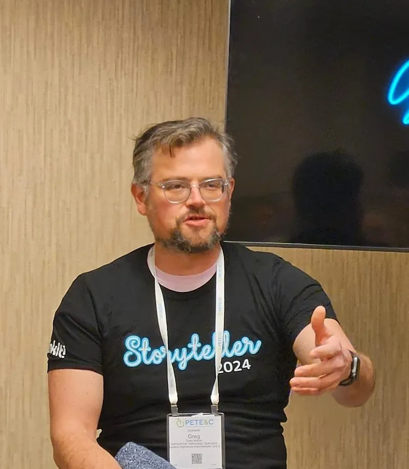
Greg Macer leads STEM education and district support at Schuylkill Intermediate Unit 29, serving as the regional connector between students, teachers, administrators, and industry partners.
With a focus on building sustainable STEM ecosystems — not just programs — Greg works across all 12 public school districts to align curriculum with state standards, connect schools to workforce opportunities, and bring innovative experiences to students who might not otherwise have access.
His work spans STEELS standards implementation, EdTech and AI integration, competition programs, makerspace development, and strategic district support. He is committed to the belief that strong STEM education is both an equity issue and an economic one.
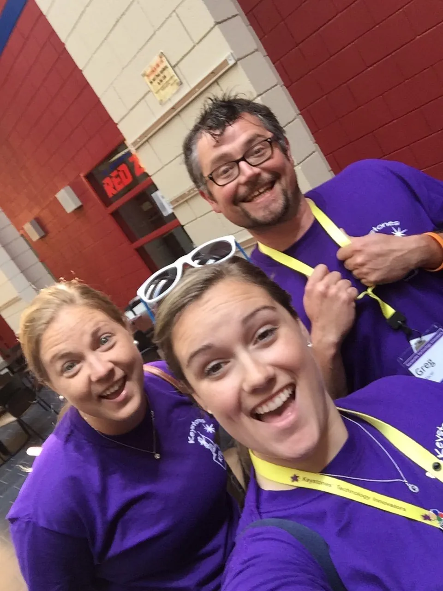
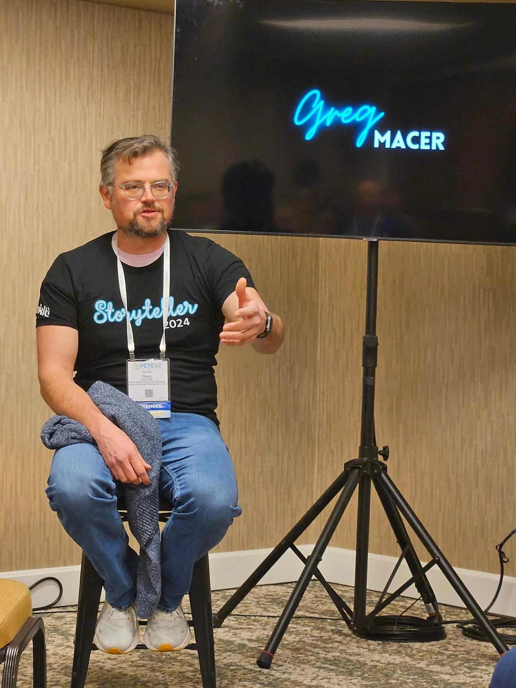
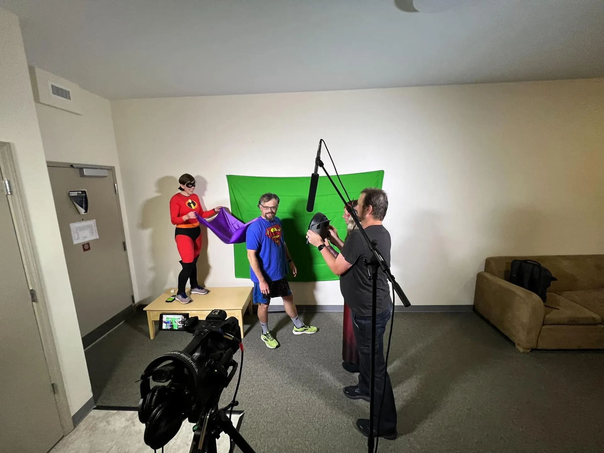
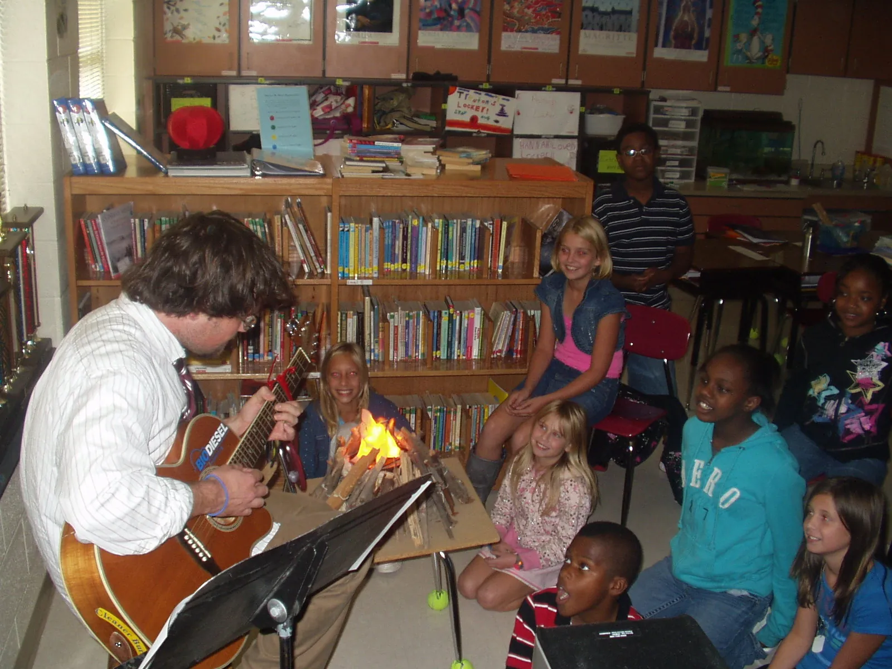

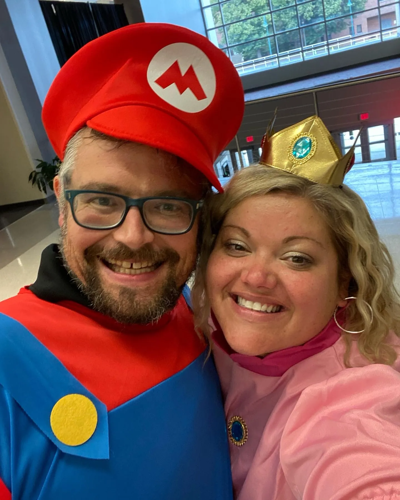
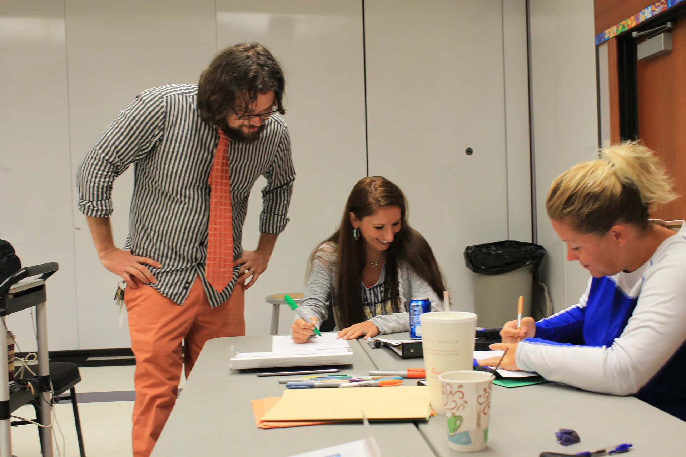
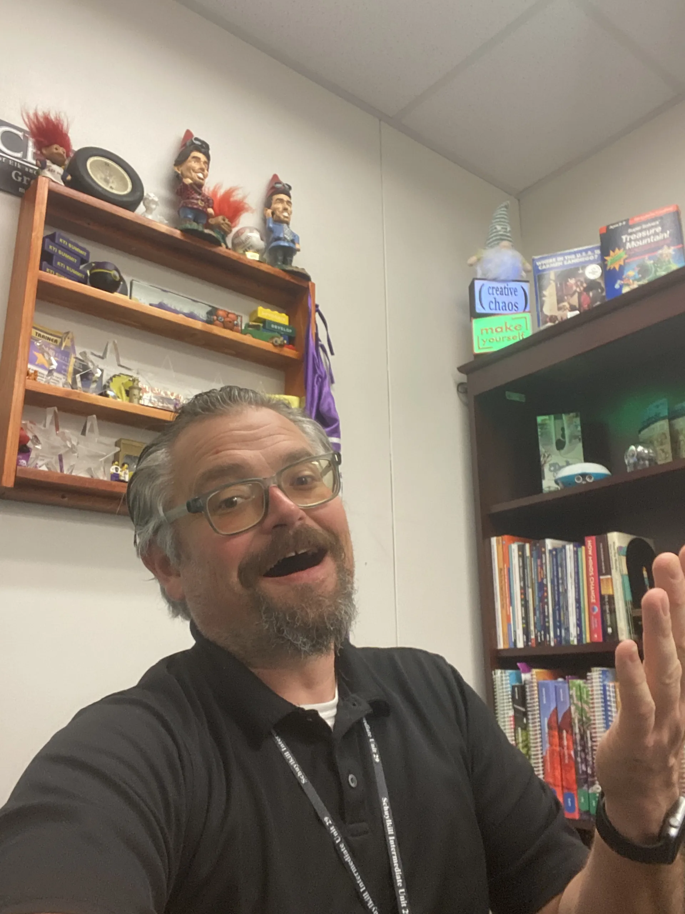
Our Core Values
Everything we do is guided by these principles.
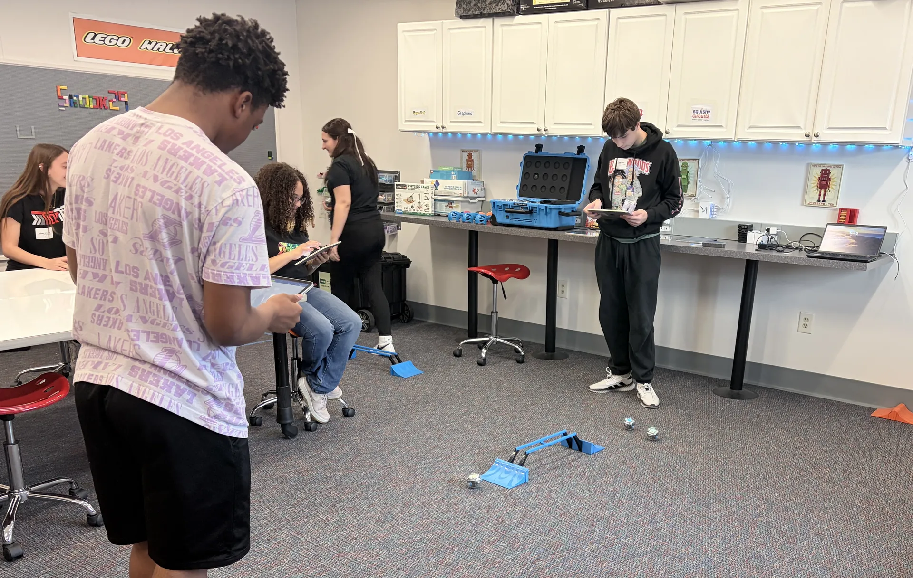
Equity First
Every student deserves STEM opportunity — regardless of their school's size, location, or resources. We design programs with equity at the center.

Connected Ecosystem
STEM thrives when schools, industry, higher education, and communities are connected. We build bridges, not silos.
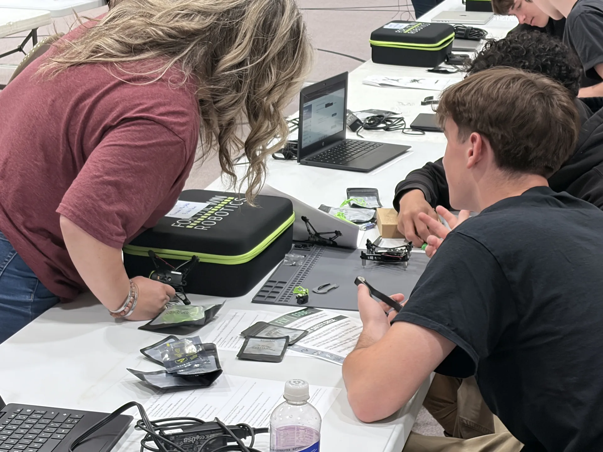
Practical Innovation
We embrace new ideas and emerging tools — but always with a practical eye toward what actually works in real classrooms with real students.
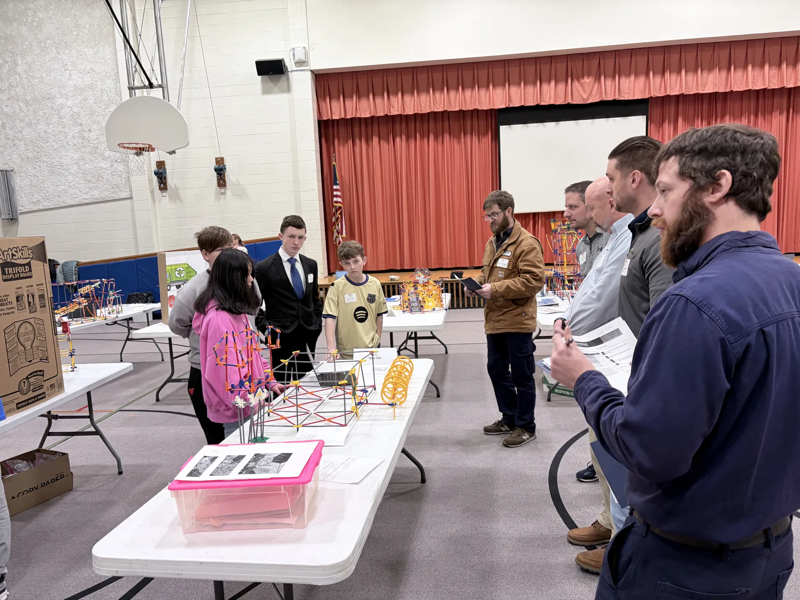
Genuine Partnership
We show up as partners — not vendors, not outside experts. We work alongside teachers, administrators, and students to build something together.